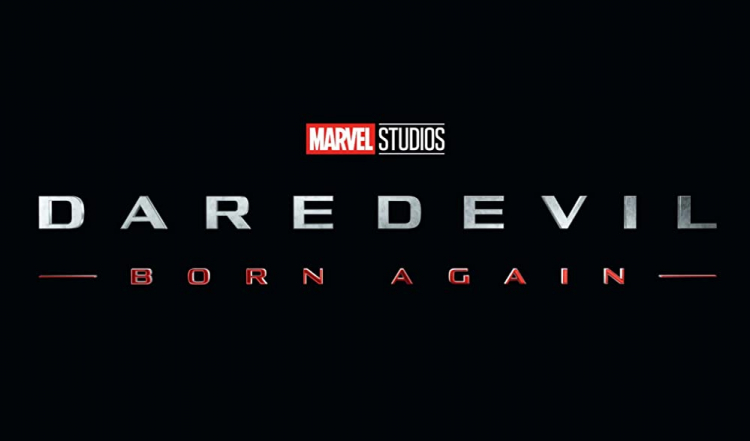
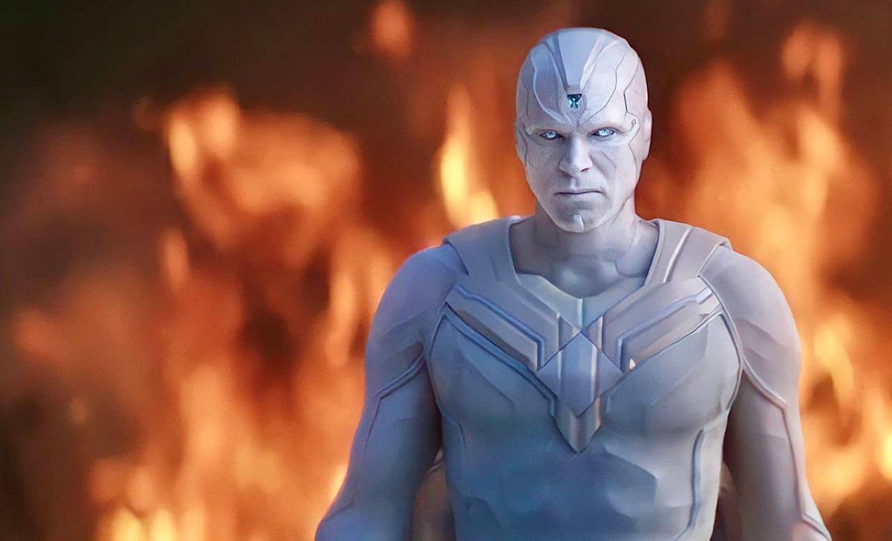

Deadpool & Wolverine reúne o icônico mercenário tagarela Wade Wilson e o poderoso mutante Wolverine em uma aventura explosiva. Wade Wilson desfruta de um momento de aparente calma ao lado de Vanessa e seus amigos, enquanto Wolverine se recupera de seus ferimentos. Seus caminhos se cruzam, dando início a uma improvável aliança.
Data de lançamento: 27/07/2024
Kraven O Caçador
Kraven é um dos anti-heróis mais icônicos e notórios. Ele teve encontros com Venom e Pantera Negra, entre muitos outros, e é um dos inimigos mais conhecidos e formidáveis do Homem-Aranha.
Data de lançamento: 12/12/2024
Capitão América: Admirável Mundo Novo
O escudo está nas mãos de Sam Wilson, após Steve Rogers entregá-lo em Vingadores: Ultimato. Sam aceita seu dever como o novo Capitão América ao lado de Bucky Barnes, enfrentando novas ameaças e aliados inesperados.
Data de lançamento: 24/02/2025
Marvel Séries
Agatha Desde Sempre
Spin-off de Wandavision, acompanha a origem da infame feiticeira Agatha Harkness, marcando o retorno de Kathryn Hahn como a personagem.
Na série, o enredo de WandaVision ganha continuidade sob a perspectiva da antagonista, Agatha Harkness, em Westview. Dessa vez, ela não está sozinha em seus planos, já que a House of Darkness, um grupo de bruxas que se unem a Harkness.
Além de Kathryn Hann e Debra Jo Rupp, que reprisam seus personagens de WandaVision, a série também conta com Patti LuPone, Aubrey Plaza e Joe Locke,
Data de lançamento: 18/09/2024
Demolidor: Nascido De Novo

Acompanha Demolidor, herói icônico dos quadrinhos, em uma nova fase. Matt Murdock (Charlie Cox) é um advogado que, quando criança, ficou cego por conta de um acidente com uma substância radioativa. Apesar de ter perdido a visão, seus outros sentidos alcançaram níveis inimagináveis a outros seres humanos.
Após perder o pai ainda muito jovem, Matt Murdock foi treinado para ser um guerreiro e usar sua deficiência como vantagem na hora de lutar.
Durante o dia, Matt é um advogado no escritório Nelson & Murdock, já durante a noite, ele é o vigilante Demolidor, atuante na Cozinha do Inferno, Nova York.
Data de lançamento: ?/03/2025
Visão

Deve se passar após os acontecimentos de WandaVision
Data de lançamento: 2026
DC
Coringa: Delírio a Dois
Sobre Arthur Fleck, que trabalhava como palhaço para uma agência de talentos e precisou lidar desde sempre com seus problemas mentais.
Vindo de uma origem familiar complicada, sua personalidade nada convencional o fez ser demitido do emprego, e, numa reação a essa e tantas outras infelicidades em sua vida, ele assumiu uma postura violenta - e se tornou o Coringa.
A continuação se passa depois dos acontecimentos do filme de 2019, após ser iniciado um movimento popular contra a elite de Gotham City, revolução esta, que teve o Coringa como seu maior representante.
Data de lançamento: 03/10/2024
Superman: O Legado
Novas aventuras de Clark Kent, que ao colocar sua capa vira Superman.
Data de lançamento: 11/07/2025
O Batman: Parte 2
Segue a história iniciada em Batman, onde Robert Pattinson assume o papel de Bruce Wayne/Batman, em seus primeiros anos como vigilante de Gotham City.
Sua trama ou o elenco envolvido não são conhecidos, exceto pelo retorno do diretor e do ator principal.
Data de lançamento: 02/10/2026
Séries DC
O Pinguim
Acompanha Oswald Cobblepot, um grande magnata de Gothan City envolvido no submundo de crime e corrupção.
A trama irá focar na vida de Oswald antes de se tornar o grande vilão Pinguin enquanto ainda ajudava o mafioso Carmine Falcone.
Embora ainda não seja levado a sério como criminoso, Pinguin já demonstra um lado violento e impulsivo, atacando quem entre no seu caminho e atrapalhe seus planos.
Data de lançamento: 19/09/2024
Tropa dos Lanterna Verde
Nova aventura solo do super-herói da DC Comics. Nos quadrinhos, a patrulha da Tropa dos Lanternas Verdes conta com milhares de patrulheiros que cuidam de cada um dos setores do universo, contando com seu poderoso anel.
Data de lançamento: 2025
Creature Commando
O novo esquadrão suicida é uma equipe militar formada por sete integrantes com habilidades tão impressionantes quanto perigosas: Noiva do Frankenstein, Doninha, Rick Flag Sr., Nina Mazursky, Doctor Phosphorus, Eric Frankenstein e G.I.